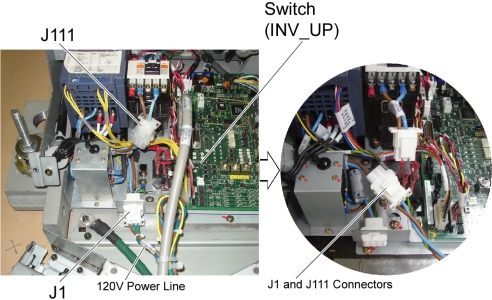
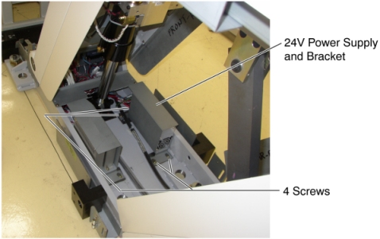
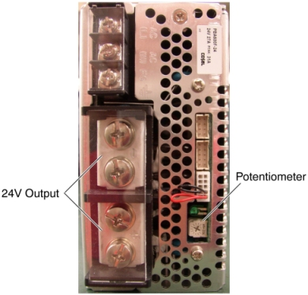

Operating Documentation
Direction 5193574-800, Rev# 22
LightSpeed 7.X Service Methods
Module Version 1.0, Version Date 10/24/08
Operating Documentation |
| Required Persons | Preliminary Reqs | Procedure | Finalization |
|---|---|---|---|
| 1 |
| Last Revised: | 25 June 2008 |
| Item | Qty | Effectivity | Part# | Manufacturer | |
|---|---|---|---|---|---|
| 24V Power Supply (5127384) | 1 | - | - | - | |
Raise the Table to maximum height.
| NOTE: | If the Table can not be raised due to a malfunction of a 24V Power Supply, connect J1 and J111 connectors to provide 120VAC directly to the Inverter Assy, then raise the Table using INV_UP switch on the GTCB board. After completion of Table raising, disconnect J1 and J111 connectors, and re-connect theses connectors to the original cable connections. |
Illustration 1: J1 and J111 Cable Connectors

Move the Cradle and IMS to OUT limit position.
Remove power from Table by turning off 120VAC, Axial Drive and HVDC switches on Service Switch Panel.
Remove the following Table Cover:
IMS Rear Cover
IMS Side Cover (Right)
Front Base Cover
Base Cover (Right)
Front/Rear Side Plate (Right)
Front Leg Plate (Right)
Illustration 2: Table Covers

Cut any tie-wraps holding the Power Supply cables to the Table frame.
Disconnect the following cable connectors:
-> J100, 5114075 cable connector
-> J101, 5114074 cable connector
-> IMS Motor Driver
-> Cradle Motor Driver
-> J31, GTCB Assy
Unscrew 4 screws, and take the Power Supply with the bracket out the Table.
Illustration 3: 24V Power Supply Removal

Connect all cable connectors, and put the new Power Supply on the floor.
Power up the Table from the Service Switch Panel.
Measure the voltage on the Test Point on the GTCB, and check that it is within +22.8VDC ~ +25.2VDC. If it falls outside these limits, adjust it by turning the potentiometer.
Illustration 4: 24V Power Supply

Turn off all 3 switches (Axial Drive, HVDC, 120VAC)
Screw the new Power Supply with the bracket into the base of the Table.
Power up the Table from the Service Switch Panel.
Verify that the Table up/down and in/out functions are operating normally.
Turn off all 3 switches (Axial Drive, HVDC, 120VAC), and re-install the Table covers.